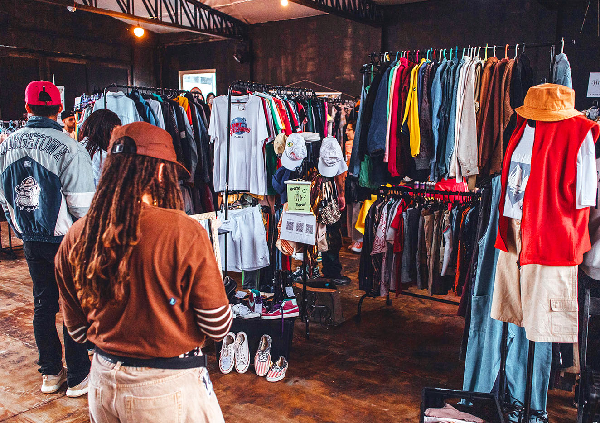

Moda Circular e Brechós — O Futuro do Consumo Consciente (Ou: Como parecer chique gastando o preço de um salgado)
Este é o meu primeiro site criado na escola!
Se você ainda acha que brechó é só um lugar com cheiro de naftalina e roupas que pertenceram ao tataravô de alguém, parabéns: você está oficialmente parado no tempo. Hoje, a Moda Circular é o maior truque de estilo da Geração Z. Basicamente, consiste em fazer a roupa rodar o mundo em vez de apodrecer no aterro sanitário. Por que adotar? > Roupa nova em fast-fashion às vezes custa os dois rins e, na primeira lavagem, encolhe tanto que só serve no seu gato. Garimpar em brechós ou customizar o que você já tem (upcycling) é a única forma de conseguir um visual 100% exclusivo sem precisar vender um órgão. Além de salvar o planeta, você evita o maior mico da moda moderna: chegar na escola e ter três pessoas com a mesmíssima camiseta que você comprou na promoção. É estilo, economia e consciência limpa.

aqui temos um brechó muito reconhecido em Curitiba, Street CWB.Estética das Subculturas Digitais — Do TikTok para as Ruas (E o surto dos algoritmos)
Se você piscar os olhos no TikTok, perdeu o nascimento de três novas estéticas de moda. Ontem todo mundo queria ser Y2K (com roupas que parecem saídas de um clipe pop do ano 2000), hoje a vibe é Cottagecore (parecendo que você mora numa cabana isolada colhendo cogumelos), e amanhã o algoritmo decide que a tendência é se vestir como um jogador de golfe dos anos 80. O fenômeno: As subculturas digitais criam microtendências na velocidade da luz. O perigo: Sua fatura do cartão não acompanha a velocidade do algoritmo. O segredo de UX e estilo aqui é não virar um personagem completo de cada tendência. Pegue o que funciona para você, ignore os excessos e lembre-se: a internet muda de ideia a cada 15 segundos, mas o seu bom senso deve durar um pouco mais.
Roupa Não Tem Gênero — A Ascensão da Moda Unissex (O fim do "isso é de menino/menina")
Vamos ser sinceros: um pedaço de tecido de algodão não tem gola cromossômica. A moda unissex (ou agênero) chegou para avisar que a separação de roupas por "masculino" e "feminino" nas lojas é só uma grande perda de tempo e de espaço. A grande vantagem: O tamanho do seu guarda-roupa dobra instantaneamente se você puder roubar jaquetas e moletons oversized de qualquer pessoa da sua casa. O foco real: Caimento, conforto e expressão pessoal. Se uma calça larga fica estilosa e tem bolsos funcionais (um milagre na moda), não importa em qual arara ela estava originalmente. A moda de verdade se preocupa com o caimento e com a mensagem que você quer passar, não com etiquetas ultrapassadas.
História da Moda — Como os Anos 90 e 2000 Voltaram com Tudo (E por que seus pais estão rindo de você)
Se você comprou uma calça cargo super larga, um óculos de lente colorida ou uma presilha de cabelo de borboleta recentemente, tenho uma notícia: você está vestindo o guarda-roupa de adolescência dos seus pais ou tios. A moda é um ciclo eterno de reciclagem cultural. O Ciclo de 20 anos: Esse é o tempo padrão para a humanidade esquecer um erro fashion e decidir que ele é legal de novo. O choque de realidade: Para você, o visual Y2K é estético e futurista retro. Para os mais velhos, é apenas o trauma de fotos antigas que eles tentaram apagar da internet. Estudar a história da moda nos faz perceber que nada se cria, tudo se replica com uma roupagem nova. Então, guarde suas roupas atuais: em 2046, seus filhos vão achar seu visual de hoje o ápice do estilo.